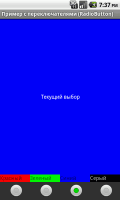
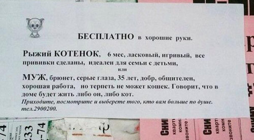
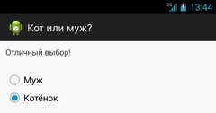

/* Моя кошка замечательно разбирается в программировании. Стоит мне объяснить проблему ей - и все становится ясно. */
John Robbins, Debugging Applications, Microsoft Press, 2000

/* Моя кошка замечательно разбирается в программировании. Стоит мне объяснить проблему ей - и все становится ясно. */
John Robbins, Debugging Applications, Microsoft Press, 2000
Познакомимся с компонентом RadioButton. Главная особенность элемента состоит в том, что он не используется в одиночестве. Всегда должно быть два и более переключателя и только один из них может быть выбранным. Это похоже на кнопки на старых радиоприёмниках, когда нажимая на одну из кнопок, вы заставляете отключиться другую нажатую кнопку.
Находится в папке Form Widgets.

Компоненты RadioButton (переключатель) используются в составе контейнера RadioGroup. Обратите внимание на два момента. Первое - в контейнер RadioGroup можно включать не только RadioButton, но и другие элементы, например, TextView. Второе - переключатели работают в своем контейнере, т.е. если у вас два контейнера RadioGroup, то переключатели из одного контейнера не влияют на поведение переключателей второго контейнера.
Основным методом для переключателя является toggle(), который инвертирует состояние переключателя. Также представляют интерес методы isChecked(), который возвращает состояние кнопки, и setChecked(), изменяющий состояние кнопки в зависимости от параметра.
radio1.setChecked(true); // программно устанавливаем статус у переключателя radio1
Для уведомления о переходе положения переключателя в активное или неактивное состояние в результате определенных событий, нужно вызывать метод setOnCheckedChangeListener() с применением интерфейса OnCheckedChangeListener.
Получив ссылку на группу переключателей, можно добавить в неё еще один переключатель (или другой элемент управления) через метод addView():
RadioGroup radiogroup = (RadioGroup )findViewByld(R.id.radioGroup);
RadioButton newRadioButton = new RadioButton(this);
newRadioButton.setText("Рыжий");
radiogroup.addView(newRadioButton);
Вы можете добавить изображение в левой, правой, верхней и нижней части переключателя, используя либо определённые атрибуты XML или программно.
Через атрибут drawableRight (свойство Drawable Right) и ему подобных:
<RadioButton
android:id="@+id/radio0"
...
android:drawableRight="@drawable/ic_launcher"
android:text="RadioButton" />
Программно через метод setCompoundDrawables(left, top, right, bottom):
radiobutton.setCompoundDrawables(null, null, getResources().getDrawable(R.drawable.rightpic), null);
В этом примере мы указали только одно значение для правого края, остальным присвоили значение null. Можно одновременно задействовать все стороны переключателя.
Создадим новую форму с четырьмя кнопками-переключателями, с помощью которых будем заливать фон приложения выбранным цветом. Сначала подготовим строковые ресурсы.
<?xml version="1.0" encoding="utf-8"?>
<resources>
<string name="app_name">Пример с переключателями (RadioButton)</string>
<string name="current_pick">Текущий выбор</string>
<string name="color_red">Красный</string>
<string name="color_green">Зеленый</string>
<string name="color_blue">Синий</string>
<string name="color_gray">Серый</string>
</resources>
Создадим простейшую разметку на основе LinearLayout. Заполним форму текстовым блоком определенного цвета и присвоим ему текст "Текущий цвет". В нижней части формы расположим четыре цветных текстовых блоока, а под ними четыре переключателя, с помощью которых мы будем менять цвет основного текстового блока.
<?xml version="1.0" encoding="utf-8"?>
<LinearLayout xmlns:android="http://schemas.android.com/apk/res/android"
android:layout_width="fill_parent"
android:layout_height="fill_parent"
android:orientation="vertical" >
<TextView
android:id="@+id/current_pick"
android:layout_width="fill_parent"
android:layout_height="fill_parent"
android:layout_weight="1"
android:background="#666666"
android:gravity="center"
android:text="@string/current_pick"
android:textColor="#ffffff" />
<LinearLayout
android:id="@+id/linearLayout1"
android:layout_width="fill_parent"
android:layout_height="wrap_content"
android:orientation="horizontal" >
<TextView
android:id="@+id/textViewRed"
android:layout_width="fill_parent"
android:layout_height="20dp"
android:layout_gravity="center"
android:layout_weight="1"
android:background="#ff0000"
android:text="@string/color_red"
android:textColor="#660000" />
<TextView
android:id="@+id/textViewGreen"
android:layout_width="fill_parent"
android:layout_height="20dp"
android:layout_gravity="center"
android:layout_weight="1"
android:background="#00ff00"
android:text="@string/color_green"
android:textColor="#006600" />
<TextView
android:id="@+id/textViewBlue"
android:layout_width="fill_parent"
android:layout_height="20dp"
android:layout_gravity="center"
android:layout_weight="1"
android:background="#0000ff"
android:text="@string/color_blue"
android:textColor="#000066" />
<TextView
android:id="@+id/textViewGray"
android:layout_width="fill_parent"
android:layout_height="20dp"
android:layout_gravity="center"
android:layout_weight="1"
android:text="@string/color_gray" />
</LinearLayout>
<RadioGroup
android:id="@+id/radioGroup1"
android:layout_width="fill_parent"
android:layout_height="wrap_content"
android:background="#333333"
android:orientation="horizontal" >
<RadioButton
android:id="@+id/radio_red"
android:layout_width="fill_parent"
android:layout_height="wrap_content"
android:layout_marginLeft="24dp"
android:layout_weight="1" />
<RadioButton
android:id="@+id/radio_blue"
android:layout_width="fill_parent"
android:layout_height="wrap_content"
android:layout_marginLeft="24dp"
android:layout_weight="1" />
<RadioButton
android:id="@+id/radio_green"
android:layout_width="fill_parent"
android:layout_height="wrap_content"
android:layout_marginLeft="24dp"
android:layout_weight="1" />
<RadioButton
android:id="@+id/radio_gray"
android:layout_width="fill_parent"
android:layout_height="wrap_content"
android:layout_marginLeft="24dp"
android:layout_weight="1"
android:checked="true" />
</RadioGroup>
</LinearLayout>
Обратите внимание, что элементы RadioButton помещаются в контейнер RadioGroup. Если теперь посмотреть на форму, то увидим одно большое серое поле. А снизу расположились в ряд четыре метки, а еще ниже также в ряд расположились четыре переключателя. Причем последний серый переключатель имеет выбранный статус (android:checked="true").
Переходим к программной части. Добавляем переменную класса для обработки щелчков на кнопках-переключателях.
OnClickListener radioListener;
// а также переменную для TextView
TextView tvPick;
Теперь можно писать код для обработки щелчков у переключателей:
radioListener = new OnClickListener() {
@Override
public void onClick(View v) {
// TODO Auto-generated method stub
RadioButton rb = (RadioButton)v;
switch (rb.getId()) {
case R.id.radio_red: tvPick.setBackgroundColor(Color.parseColor("#ff0000"));
break;
case R.id.radio_green: tvPick.setBackgroundColor(Color.parseColor("#0000ff"));
break;
case R.id.radio_blue: tvPick.setBackgroundColor(Color.parseColor("#00ff00"));
break;
case R.id.radio_gray: tvPick.setBackgroundColor(Color.parseColor("#666666"));
break;
default:
break;
}
}
};
tvPick = (TextView)findViewById(R.id.current_pick);
RadioButton rb_red = (RadioButton)findViewById(R.id.radio_red);
rb_red.setOnClickListener(radioListener);
RadioButton rb_green = (RadioButton)findViewById(R.id.radio_green);
rb_green.setOnClickListener(radioListener);
RadioButton rb_blue = (RadioButton)findViewById(R.id.radio_blue);
rb_blue.setOnClickListener(radioListener);
RadioButton rb_gray = (RadioButton)findViewById(R.id.radio_gray);
rb_gray.setOnClickListener(radioListener);
Запустим приложение и посмотрим, что у нас получилось. Пощёлкаем по переключателям и убеждаемся, что всё работает.

Показанный выше способ использует щелчок, так как переключатели можно рассматривать как кнопки. Но на самом деле у переключателей есть свой слушатель setOnCheckedChangeListener(). Я расположил в новом проекте RadioGroup с тремя RadioButton и написал простенький пример. Ваша задача - переписать предыдущий пример на основе этого шаблона.
@Override
public void onCreate(Bundle savedInstanceState) {
super.onCreate(savedInstanceState);
setContentView(R.layout.activity_main);
RadioGroup radiogroup = (RadioGroup) findViewById(R.id.radioGroup1);
radiogroup.setOnCheckedChangeListener(new RadioGroup.OnCheckedChangeListener() {
@Override
public void onCheckedChanged(RadioGroup group, int checkedId) {
// TODO Auto-generated method stub
switch (checkedId) {
case -1:
Toast.makeText(getApplicationContext(), "No choice", Toast.LENGTH_SHORT).show();
break;
case R.id.radio0:
Toast.makeText(getApplicationContext(), "Radio0", Toast.LENGTH_SHORT).show();
break;
case R.id.radio1:
Toast.makeText(getApplicationContext(), "Radio1", Toast.LENGTH_SHORT).show();
break;
case R.id.radio2:
Toast.makeText(getApplicationContext(), "Radio2", Toast.LENGTH_SHORT).show();
break;
default:
break;
}
}
});
}
Этот способ намного удобней. Вам даже не нужно объявлять ссылки на переключатели и назначать им слушатели. Код получается более компактным.
Обратите внимание, что метод onCheckedChanged() принимает параметр RadioGroup, что позволяет применять один и тот же слушатель OnCheckedChangeListener() для нескольких групп переключателей. Вариант -1 сработает, когда группа переключателей будет сброшена в коде с помощью метода clearCheck().
Когда пользователь выберет любой из переключателей, то он уже не сможет снять с него отметку. Какой-нибудь из переключателей обязательно будет выбран в одном контейнере с ним. Единственный способ очистить все переключатели - программно вызвать метод clearCheck(), который относится к классу RadioGroup.
RadioGroup radiogroup;
// щелчок кнопки
public void onClick(View view) {
// очистить все переключатели
radiogroup.clearCheck();
}
У RadioGroup есть также метод getCheckedRadioButtonId(), который позволяет узнать идентификатор выбранного переключателя.
public void onClick(View view) {
int checkedRadioButtonId = radiogroup.getCheckedRadioButtonId();
// Найдём переключатель по его id
RadioButton myradiobutton = (RadioButton) findViewById(checkedRadioButtonId);
Toast.makeText(getApplicationContext(),
myradiobutton.getText(), Toast.LENGTH_SHORT).show();
}
Также можно узнать индекс выбранного переключателя через метод indexOfChild():
OnCheckedChangeListener radioGroupOnCheckedChangeListener =
new OnCheckedChangeListener(){
@Override
public void onCheckedChanged(RadioGroup group, int checkedId) {
RadioButton checkedRadioButton = (RadioButton)radioGroup.findViewById(checkedId);
int checkedIndex = radioGroup.indexOfChild(checkedRadioButton);
textCheckedIndex.setText("checkedIndex = " + checkedIndex);
}};
Теперь, когда вы познакомились с новым элементом, то вам не составит труда написать программу для нелёгкого выбора.

Разметка:
<?xml version="1.0" encoding="utf-8"?>
<LinearLayout xmlns:android="http://schemas.android.com/apk/res/android"
android:id="@+id/linearLayout"
android:layout_width="fill_parent"
android:layout_height="fill_parent"
android:orientation="vertical"
android:padding="10dip" >
<TextView
android:id="@+id/textView1"
android:layout_width="match_parent"
android:layout_height="wrap_content"
android:text="" />
<RadioGroup
android:id="@+id/radioGroup1"
android:layout_width="match_parent"
android:layout_height="wrap_content"
android:layout_marginTop="24dp" >
<RadioButton
android:id="@+id/radioHusband"
android:layout_width="wrap_content"
android:layout_height="wrap_content"
android:checked="true"
android:text="Муж" />
<RadioButton
android:id="@+id/radioKitten"
android:layout_width="wrap_content"
android:layout_height="wrap_content"
android:text="Котёнок" />
</RadioGroup>
</LinearLayout>
И код:
package ru.alexanderklimov.test;
import ...
public class MainActivity extends Activity {
TextView tvInfo;
OnClickListener radioListener;
/** Called when the activity is first created. */
@Override
public void onCreate(Bundle savedInstanceState) {
super.onCreate(savedInstanceState);
setContentView(R.layout.activity_main);
tvInfo = (TextView)findViewById(R.id.textView1);
RadioGroup radiogroup = (RadioGroup) findViewById(R.id.radioGroup1);
radiogroup.clearCheck();
radiogroup.setOnCheckedChangeListener(new RadioGroup.OnCheckedChangeListener() {
@Override
public void onCheckedChanged(RadioGroup group, int checkedId) {
// TODO Auto-generated method stub
switch (checkedId) {
case -1:
tvInfo.setText("");
break;
case R.id.radioHusband:
tvInfo.setText("Подумайте ещё раз");
break;
case R.id.radioKitten:
tvInfo.setText("Отличный выбор!");
break;
}
}
});
}
}

Девушки, нужен ли вам такой муж? Если он не любит котиков, то будет ли любить вас? Возьмите лучше котёнка. Он клёвый.
Продвинутые приёмы работы с RadioButton (Закрытая зона/2-й месяц)
Запомнить состояние переключателей